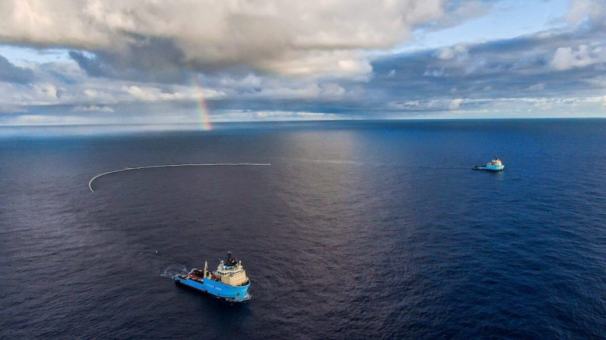
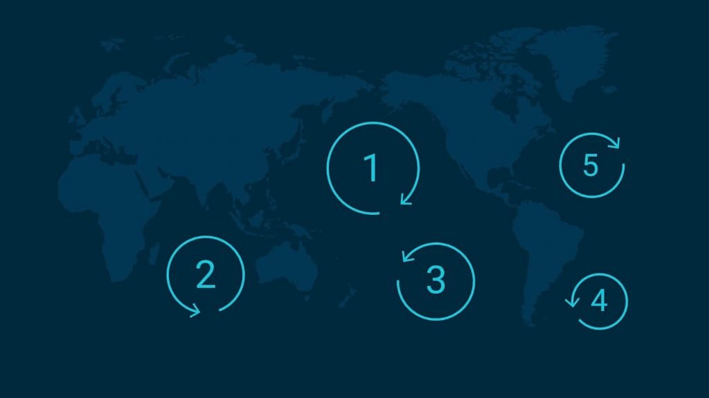
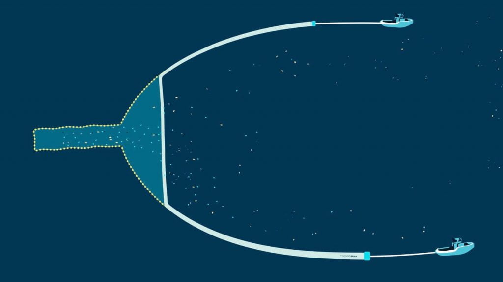
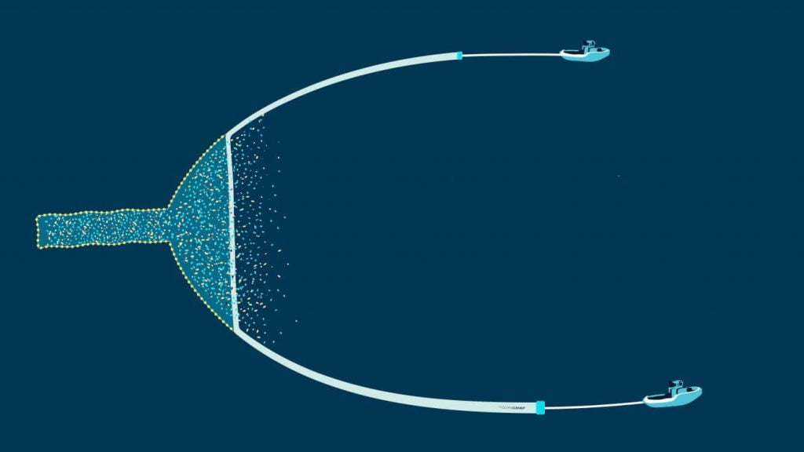
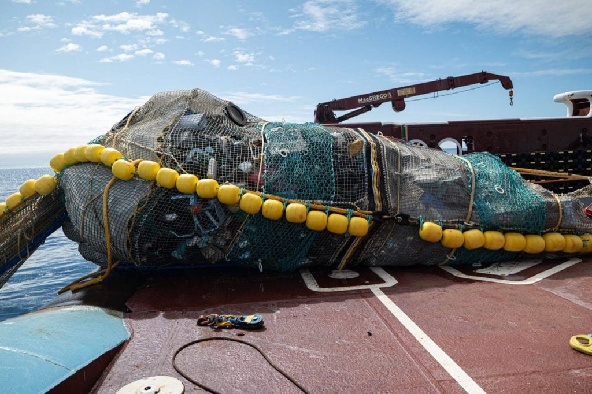
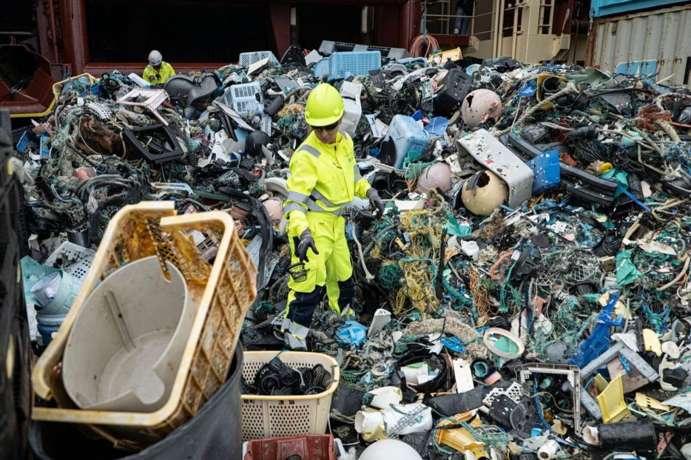
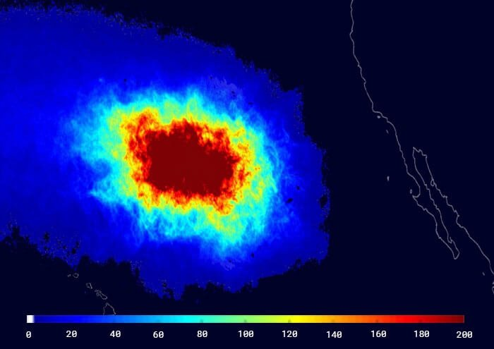
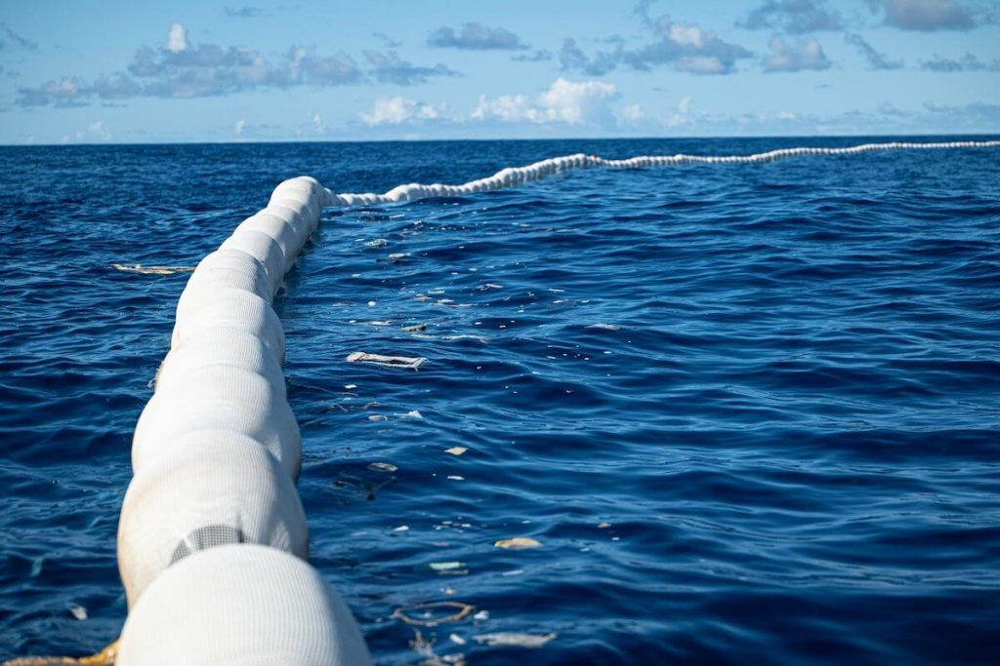
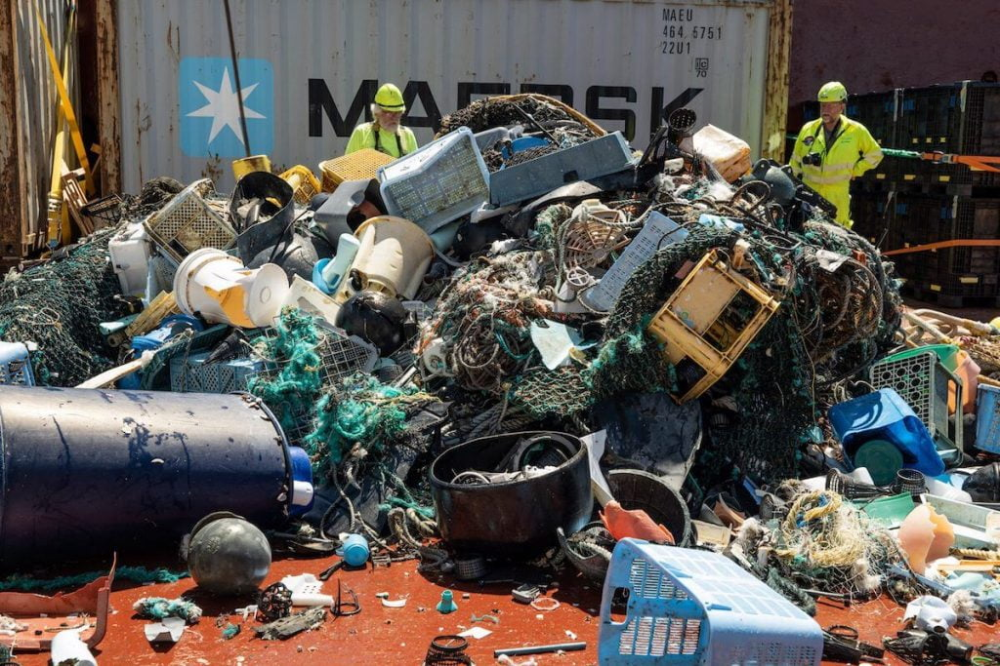
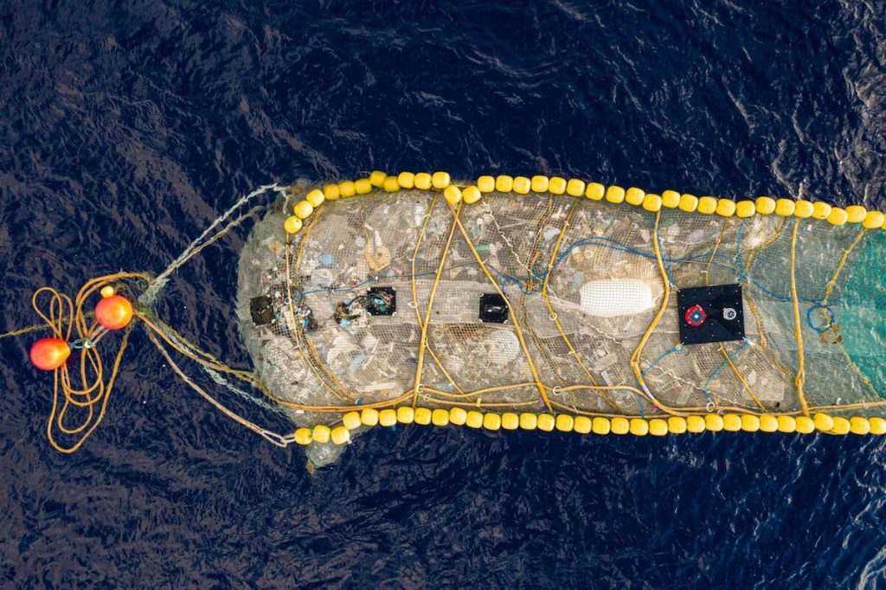

ဒါဆို ဒီလောက်များတဲ့ ပလပ်စတစ် အမှိုက်တွေ ဘယ်က ရောက်လာ တာလဲဗျာ။

ခန့်မှန်း ချက်တွေ အရဆို ကမ္ဘာ့ ပင်လယ် သမုဒ္ဒရာ တွေထဲက ပလပ်စတစ် အမှိုက် စုစုပေါင်းရဲ့ ၈၀% ဟာ ကမ္ဘာပေါ်က မြစ်ကြီး ၁,၀၀၀ ခန့်ဆီကနေ တဆင့် လူတွေ စွန့်ပစ်လိုက်တဲ့ အမှိုက်တွေလို့ ဆိုပါတယ်။ ဒီ အမှိုက်တွေဟာ ကမ္ဘာ့ ရေစီးကြောင်းတွေအတိုင်း မျောပါသွားပြီး သမုဒ္ဒရာ ထဲက နေရာဒေသ ၅ ခုမှာ သွားပြီး စုပါတယ်။ အဲ့သည် အမှိုက်တွေ သွားစုတဲ့ နေရာ ဒေသတွေကို သမုဒ္ဒရာ အမှိုက်ပုံ ကြီးများ (ocean garbage patches) လို့ ခေါ်ပါတယ်။

ပင်လယ်ထဲက ပလတ်စတစ် အိတ်တွေနဲ့ ပလပ်စတစ် ပစ္စည်းတွေကြောင့် နှစ်စဉ် ရေသတ္တဝါ မြောက်များစွာ အသက်ဆုံးရှုံး ကြရပါတယ်။ ဒီ ပြဿနာကို ဖြေရှင်းဖို့ ပင်လယ်ထဲက အမှိုက်တွေကို အလွယ်တကူနဲ့ သိမ်းပေးနိုင်မယ့် နည်းပညာ သစ်ကို အမေရိကန် အခြေစိုက် သဘာဝ ပတ်ဝန်းကျင် ထိန်းသိမ်းရေး NGO တခုက တီထွင် လိုက်ပါတယ်။ ဒီ ကိရိယာကို ပင်လယ်ထဲမှာလဲ လက်တွေ့ စမ်းသပ် အောင်မြင်ပြီလို့ သိရပါတယ်။
ပင်လယ်ထဲမှာ ပလပ်စတစ် အမှုက် ကောက်ရတာက အပြောလွယ်သလောက် လက်တွေ့ မလွယ်ပါဘူး။ ပင်လယ်ထဲက ပလပ်စတစ် အမှိုက်တွေက မိုင်ပေါင်း ရာပေါင် များစွားမှာ ပြန့်ကျဲပြီး နေတာပါ။ ဒီတော့ တအိပ်ချင်း ကောက်ဖို့ ဆိုတာက ဘယ်လိုမှ မဖြစ်နိုင်ပါဘူး။
အခု ပင်လယ်ထဲ အမှိုက်ကောက်မယ့် နည်းစနစ်ကို The Ocean Clean Up ဆိုတဲ့ NGO က တီထွင်ပြီး အောင်အောင် မြင်မြင် စမ်းသပ် နိုင်ခဲ့တာ ဖြစ်ပါတယ်။
ဒီစနစ်မှာ ပထမဆုံးက သမုဒ္ဒရာ ရေစီးကြောင်း တွေအတိုင် မြောလာနေတဲ့ ပလပ်စတစ် စတွေကို တစ်နေရာ ထဲမှာ စုပေးဖို့ အတွက် ရေပေါ်မှာ ပေါလော ပေါ်နေတဲ့ ပိုက် အတားအစီး တစ်ခုနဲ့ စုပေးပါတယ်။ ဂ ငယ်ပုံ ရှိတဲ့ ဒီ အမှိုက်စု ပိုက်ရဲ့ လက်တံ နှစ်ဖက်ကို မော်တော်နဲ့ ဖြည်းဖြည်းချင်း ဆွဲယူပြီး ပိုက်ရဲ့ ပါးစပ်ကိုတော့ ရေစီးကြောင်း ဖက်ကို ဟ ပြီး ဖွင့်ထား ပေးပါတယ်။


စုဆောင်း ရရှိတဲ့ ပလတ်စတစ် အမှိုက်တွေကို ပြန်ပြီး recycle ပြန်လုပ်မယ်လို့ ဆိုပါတယ်။ ဒီ recycle လုပ်ရာက ရရှိတဲ့ အကျိုးအမြတ် တွေနဲ့ ဒီ ပင်လယ်ပြင် အမှိုက်ရှင်းမယ့် လုပ်ငန်းစဉ် အတွက် လိုအပ်တဲ့ ကုန်ကျစားရိတ်ကို ရှာဖွမယ်လို့ သိရပါတယ်။
ဒီ အမှိုက်ဖမ်း ပိုက်တွေဟာ မီလီမီတာ အနည်းငယ်ပဲ အရွယ်ရှိတဲ့ ပလတ်စတစ် အစလေး တွေကနေ ပလပ်စတစ် အမှိုက် အကြီး တွေအထိ ဖမ်းယူနိုင်မယ်လို့ ဆိုပါတယ်။ စမ်းသပ်မှုမှာ ပင်လယ်ထဲ စွန့်ပစ်ထားတဲ့ ငါးဖမ်းပိုက်ဟောင်း တွေကိုပါ ဖမ်းယူနိုင်တာ တွေ့ရပါတယ်။
The Ocean Clean Up အဖွဲ့ဟာ ကမ္ဘာပေါ်က သမုဒ္ဒရာ အားလုံးမှာ ဒီအမှိုက်သိမ်း ပိုက်တွေ ဖြန့်ကျက်သွားဖို့ စီစဉ်နေပါတယ်။ အကယ်လို့ လူတွေက ပလတ်စတစ် အမှိုက်တွေကို မြစ်ချောင်းတွေထဲ စွန့်ပစ်တာကို တားဆီးနိုင်မယ် ဆိုရင် သက္ကရာဇ် ၂၀၄၀ မှာ သမုဒ္ဒရာ ထဲက ပလတ်စတစ် အမှိုက် အားလုံးရဲ့ ၉၀% ကို ရှင်းလင်း ပစ်နိုင်မယ်လို့ ဆိုပါတယ်။





